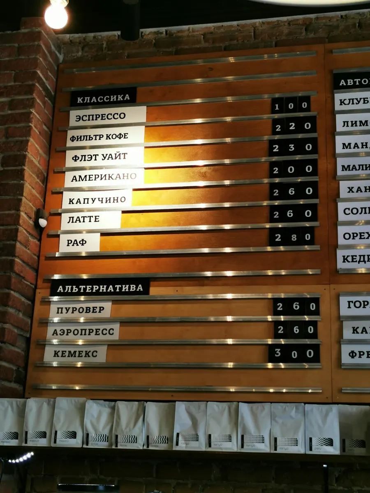
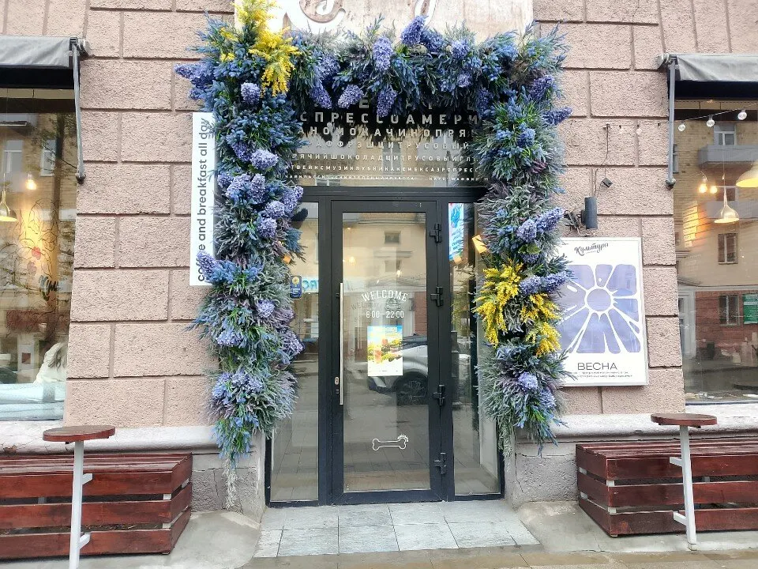
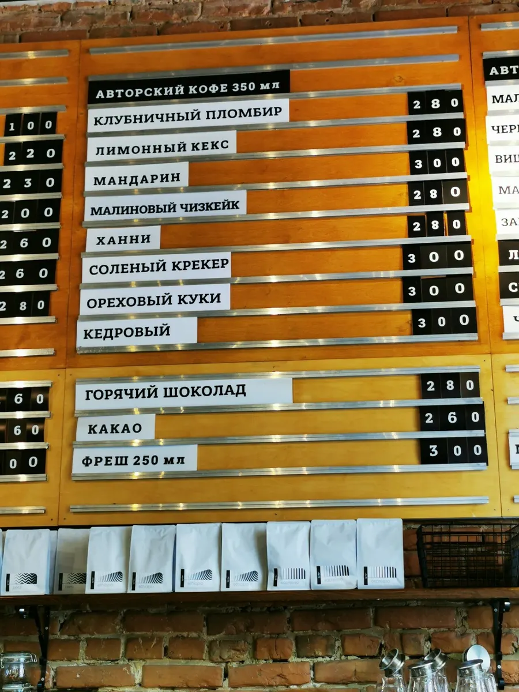
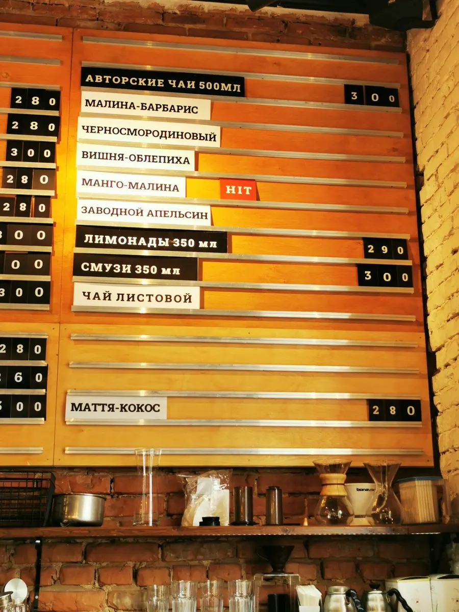
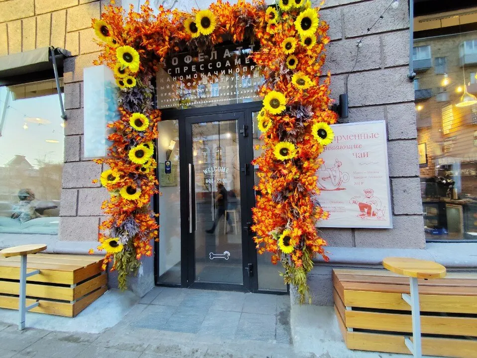

Проспект Мира, 56Кофейня на Мира в Красноярске: завтраки с 8 утра
Сырники, вафли с яйцом пашот, омлеты и авторский кофе 350 мл. До полудня кофе 200 мл – 109 ₽.
Выбрала это место для завтрака, и это оказался самый лучший завтрак в Красноярске.Елизавета Кулдошина, отзыв на Яндекс Картах, 12 июля 2026
Завтракать можно почти до закрытия
Цены – с меню в зале. Сырники, вафли, блинчики и большие завтраки – весь день, не только утром.
Сырники и блинчики
- Сырники150 г · сметана, джем или сгущёнка +30 ₽350 ₽
- Блинчики классические150 г200 ₽
- Блинчики с сыром и курицей200 г280 ₽
- Блинчики с лососем200 г340 ₽
Вафли
- Бельгийская с черничным кремом и голубикой220 г280 ₽
- Бельгийская с кремом пломбир и кокосом220 г350 ₽
- Картофельная с гуакамоле и мягким яйцом220 г360 ₽
- Тыквенная с беконом240 г360 ₽
- Тыквенная с лососем240 г380 ₽
- Картофельная с креветками и гуакамоле260 г430 ₽
Большие завтраки
- Сицилийский380 гОмлет, лосось слабосолёный, томаты черри, фета, салат, клюквенный соус, тост540 ₽
- Английский400 гГлазунья, колбаски, бекон, фасоль, шампиньоны, черри, тост560 ₽
Омлет, глазунья или скрембл
- С курицей250 г320 ₽
- С беконом250 г320 ₽
- С лососем250 г360 ₽
Лёгкое
- Гранола с йогуртом150 г220 ₽
- Чиа-пудинг260 г250 ₽
- Каша овсяная или рисовая220 г250 ₽


Как на доске в зале – с ценами
Цены – с досок в зале. Гости пишут, что есть альтернативное молоко.
Вход с цветочной аркой на Мира, 56
Над дверью – «coffee and breakfast all day». У окон снаружи – столики и лавки.

- Можно с собакойОтмечено на карточке кофейни.
- Летняя верандаСтолики на улице у окон.
- Кофе с собойИ еда навынос – по дороге на работу.
- ВелопарковкаРядом со входом.
- Wi-Fi и оплата картойМожно посидеть с ноутбуком.
- Бонусная система«Есть бонусная система, что тоже хорошо», – пишет гостья.
Что пишут гости на картах
Скопированы с карточки на Яндекс Картах без правок.
-
«Выбрала это место для завтрака, и это оказался самый лучший завтрак в Красноярске. Можно взять вот такое блюдо (есть несколько вариантов) и к нему по скидке взять кофе. Вкусно, быстро и уютно внутри»
-
«Очень любим это место, кофе и завтраки потрясающие. Классный интерьер, большое меню, есть что выбрать. Сырники просто топ, говорю вам как эксперт по сырникам!»
-
«Прекрасная кофейня: вкусный кофе, полноценные сытные завтраки, приятная ненавязчивая музыка. Если проснулись в чужом городе и рядом есть эта кофейня, смело заходите, она вас порадует, даже если вы такой сноб как я)»
Приходите на завтрак – с 8 утра каждый день
Проспект Мира, 56, в самом центре. Кофе можно взять с собой, с собакой – можно.
Новости и меню – в группе ВКонтакте.